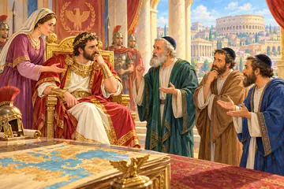

✨ אמונה, ביטחון ותשובה · 18 סיפורים
 "ברא אלהים" – מעשה שבא מין ואמר לר' עקיבא: העולם הזה מי בראו?הילד שרכב על כתפי אביו
"ברא אלהים" – מעשה שבא מין ואמר לר' עקיבא: העולם הזה מי בראו?הילד שרכב על כתפי אביו פעם אחת היה דוד מלך ישראל יושב בגנו וראה צרעה אוכלת עכביש. אמר
פעם אחת היה דוד מלך ישראל יושב בגנו וראה צרעה אוכלת עכביש. אמר הנס הכפול בתוך כבשן האש
הנס הכפול בתוך כבשן האש רבן גמליאל ור' אלעזר בן־עזריה ור' יהושע ורבי עקיבא היו מהלכים בדרך ושמעו
רבן גמליאל ור' אלעזר בן־עזריה ור' יהושע ורבי עקיבא היו מהלכים בדרך ושמעו ומפני מה קראו לו "נחום איש גם־זו"? מפני שעל כל־דבר שהגיע לו היה
ומפני מה קראו לו "נחום איש גם־זו"? מפני שעל כל־דבר שהגיע לו היה פעם אחת היה ר' עקיבא מהלך בדרך. הגיע למקום אחד, בקש אכסניא ולאסודו של המשיח בשער העיר
פעם אחת היה ר' עקיבא מהלך בדרך. הגיע למקום אחד, בקש אכסניא ולאסודו של המשיח בשער העיר רב הונא החמיצו לו ארבע מאות גרבי יין. נכנסו אצלו חכמים. אמרו לו:
רב הונא החמיצו לו ארבע מאות גרבי יין. נכנסו אצלו חכמים. אמרו לו: רבי אבא בר זמינא והמבחן ברומי
רבי אבא בר זמינא והמבחן ברומי מעשה באחד ששאל לרבן גמליאל: באיזה מקום הקדוש־ברוך־הוא נתון? אמר לו: איני יודעהילד הקטן והספינה בים הסוער
מעשה באחד ששאל לרבן גמליאל: באיזה מקום הקדוש־ברוך־הוא נתון? אמר לו: איני יודעהילד הקטן והספינה בים הסוער האור שמאיר בכל מקום
האור שמאיר בכל מקום המראות המופלאות וסוד המקום הקטן
המראות המופלאות וסוד המקום הקטן רבן גמליאל ומבחן הכוכבים של הקיסר
רבן גמליאל ומבחן הכוכבים של הקיסר
אדרינוס מלך רומי, כון שכבש את־העולם כלו הלך לו לרומי. אמר לבני פלטורין"שני רשעים שברת" – משל לשני בני־אדם שהלכו בדרך, אחד צדיק ואחד רשע, הפתח הפתוח מבית האסורים האפל
הפתח הפתוח מבית האסורים האפל